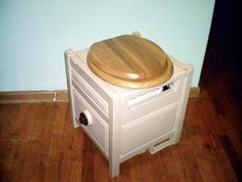

I have been looking at different ways to become more self sufficient. So, I’m doing all of the do-it-yourself projects I can, such as making this sawdust toilet, which cost me just $30 in materials.
I used an old garden hose box, a new toilet seat and a 5-gallon bucket with lid, which sits inside the hose box, plus sawdust. Successive layers of sawdust added after the “deposit” is made eliminate odor. The contents of the bucket can be safely composted, but not for use in vegetable gardens.
My family thought I was nuts, until the other day when our septic system lateral was drowning in rainwater and the toilet wouldn’t flush. They sure appreciated the sawdust toilet then!
|
 MICHELLE RUFENER This sawdust toilet is great to use while camping or for emergencies. |
|
|